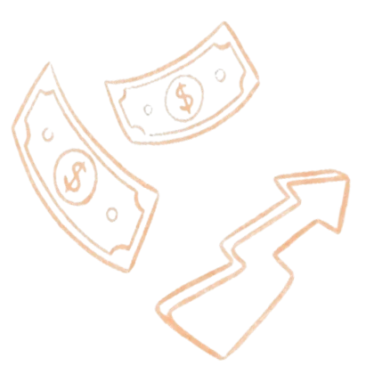
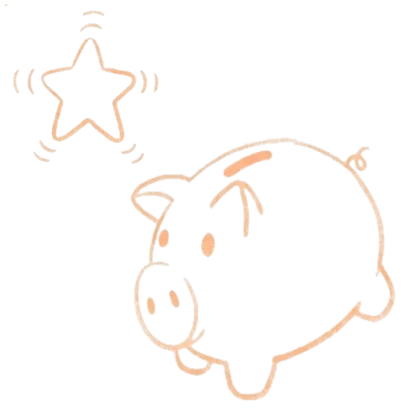
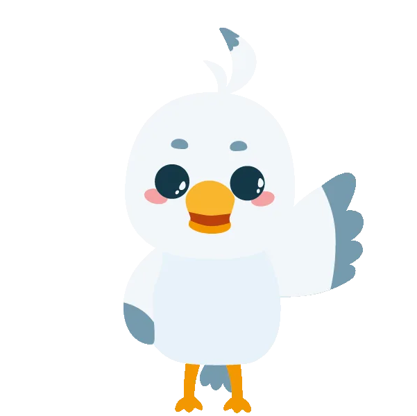
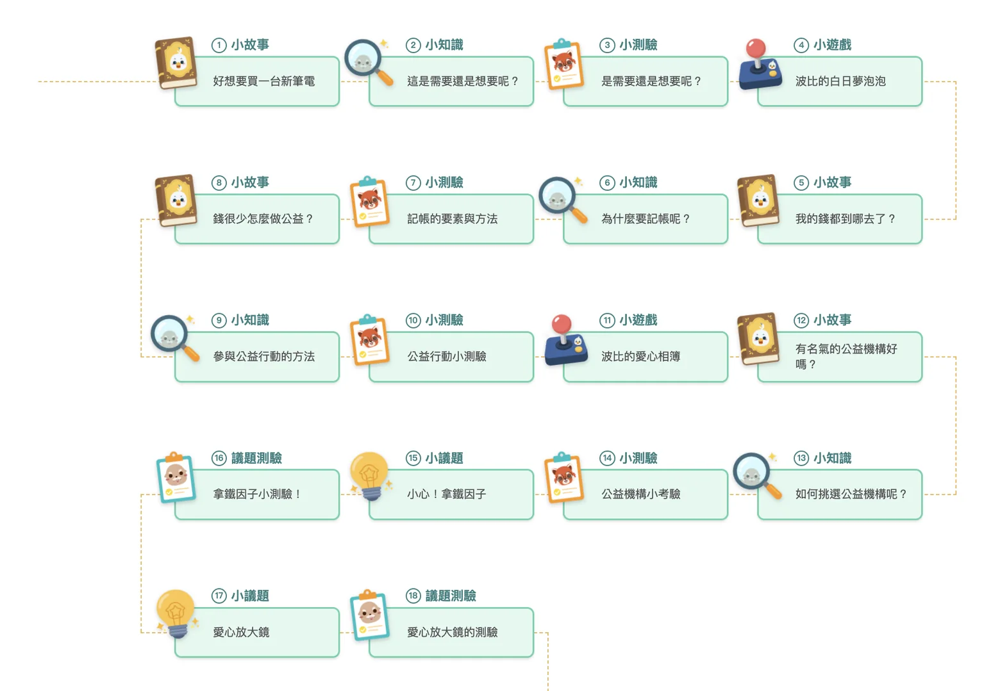
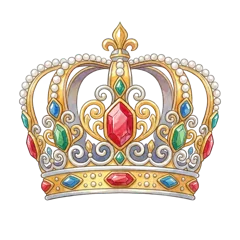
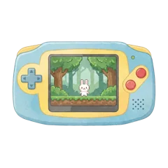
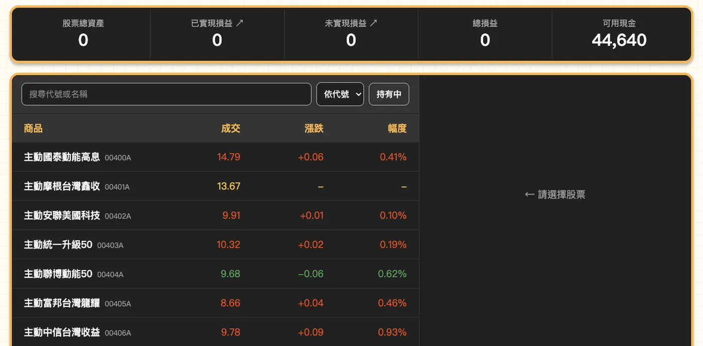

橘蘋獨立模組課程・僅線上開課
兒童財商教育・不限地區
橘蘋財商素養課程
金錢觀不是用聽的，是用「經歷」學會的。
每週一堂，老師帶著孩子上課、想議題；課後的世界 24 小時開放：賺薪水、儲蓄、投資，自己決定怎麼用錢。想亂花錢？可以。突然生病卻沒買保險？自己付。所有後果都發生在遊戲裡——犯錯的成本是零，學到的教訓是真的。
國小 3-6 年級
每週一堂・90 分鐘
45 堂課程・關卡式解鎖
50 分鐘試聽：實際體驗雙師上課與平台操作。留下資料，課程顧問將與您聯繫安排——說明完讓您帶回去考慮，不需要當場決定。
橘子蘋果程式學苑出品｜深耕兒童與青少年程式教育 14 年・全台 12 縣市設有實體教室・服務超過 10 萬名學員

財商學習平台
290
30,000
小明 ▾
今日任務
✓ 每日測驗+200
查看可用現金明細+300
完成一堂課程+3,000
平台功能示意圖（實際畫面以平台為準）。每日任務每天輪替，畫面中金額皆為平台模擬金幣。
「橘蘋財商素養課程」是橘子蘋果程式學苑為國小 3-6 年級孩子設計的兒童理財課，搭配專屬的「財商學習平台」練習。每週一堂 90 分鐘：前 50 分鐘雙師模式：課程影片講觀念、真人老師看著每個孩子的操作；後 40 分鐘「財商議題課」，老師帶著討論當週議題。課後平台開放，孩子在理財經營遊戲中領日薪、儲蓄生息、模擬投資、用保險面對突發風險；家長每週收到學習週報。課程共 45 堂。平台內所有金幣皆為模擬貨幣，非真實金錢，也不涉及任何真實金融交易或投資建議。
01・為什麼需要兒童理財教育
這幾句話，你家是不是也講過？
「錢呢？上禮拜不是才給你？」
錢一到手就花完。問他花去哪了，他自己也答不出來。
「要存錢啊，不要一直買。」
你說「要存錢」，他聽到的是「不能買」。道理講一百次，他點頭，然後照買。
「這些學校不會教嗎？」
數學考一百分，不代表懂得管理自己的錢。金錢教育在課表上，一直是空白的。
而這些判斷，會一路跟著他長大。
現在是零用錢提早花完、看到限時特價就想買。等他長大，同樣的判斷會用在別的地方——第一張信用卡帳單上的「最低應繳金額」、同學拉他進去的投資群組、看起來只要再抽一次就會中的機率商品。
差別只在於，那時候的學費是真的。而且沒有人會在他刷下去之前，先提醒他一句。
所以我們不講道理——
我們給孩子一個「會發生後果」的世界。
02・學什麼
45 堂，從自己的零用錢一路講到全球供應鏈
三個階段像同心圓往外放大：先看懂自己口袋裡的錢，再看懂銀行、信用與投資，最後看懂國家與世界怎麼運轉。每階段 15 堂，依序解鎖。
什麼是「財商素養」？
財商素養指的是理解金錢如何運作、並據以做出決定的能力。它包含分辨需要與想要、看穿價格與行銷手法、認識儲蓄與利息、理解風險與保險，以及知道錢在家庭、國家與世界之間怎麼流動。財商素養教的不是怎麼賺錢，而是讓孩子在花錢、存錢與承擔後果之前，先有判斷的依據。
橘子蘋果把這件事拆成 45 堂課，用雙師模式上：課程影片負責把觀念講清楚，真人老師全程看得到每個孩子的畫面，發現卡住會主動開啟通話。課後再用一套理財經營遊戲，讓觀念在「會發生後果」的環境裡真的練過一遍。
這些問題，多數大人也答不出來。課表裡每一題，都有一整堂課在講——
為什麼標價都是 99，不是 100？
第一階段・第 8 堂・店家折扣揭密
手機遊戲裡「免費」的東西，為什麼反而讓人一直花錢？
第一階段・第 11 堂・免費的秘密
遊戲裡抽寶物，跟賭博差在哪裡？
第一階段・第 15 堂・聰明消費
借錢給朋友，為什麼常常連朋友都做不成？
第二階段・第 18 堂・債務的代價
信用卡帳單上的「最低應繳金額」，為什麼是陷阱？
第二階段・第 19 堂・認識信用卡
政府多印一點鈔票，大家不就都變有錢了？
第三階段・第 34 堂・誰管理國家的錢
一艘船卡在運河，為什麼全世界都跟著缺貨？
第三階段・第 40 堂・全球化與供應鏈
一朵鬱金香，為什麼曾經比一棟房子還貴？
第三階段・第 41 堂・經濟泡沫與歷史
第一階段・無基礎可上
第 1–15 堂
看懂日常生活裡的錢
從「需要與想要」開始，走進家裡的帳本，再走進商店——看穿折扣、定價與「免費」背後的算計。
看這個階段的學習重點與完整課表
貨幣演變與現代金融
家庭財務與收入來源
商業行銷與定價秘密
聰明消費與網購安全
上完這個階段，孩子會——
- 分辨「需要」與「想要」，建立消費的價值判斷
- 認識貨幣的演變，一路到今天的電子支付與數位貨幣
- 了解收入從哪裡來，家裡的錢又花去哪裡
- 看穿折扣、定價策略與「免費」的行銷手法
- 辨識消費陷阱與網路購物的風險
15 堂完整課表
- 第 1 堂古代貨幣以物易物、貨幣的演變，以及古代紙幣的防偽智慧
- 第 2 堂現代貨幣與支付工具鈔票的防偽技術、各種支付工具與行動支付
- 第 3 堂發票與未來貨幣索取發票的意義、雲端發票，以及數位貨幣
- 第 4 堂家庭的必要開銷水電瓦斯、租房買房，家裡每個月的錢流去哪
- 第 5 堂家庭支出的選擇有限預算下的取捨——旅遊、教育、養車與寵物
- 第 6 堂錢從哪裡來主動收入與被動收入，以及紅包這種不固定收入
- 第 7 堂主動收入職業的多樣性、正職與兼職的差別、創業的風險與報酬
- 第 8 堂店家折扣揭密打折背後的行銷邏輯，與「尾數 9」的定價心理
- 第 9 堂店家小巧思菜單排版、套餐陷阱、收銀台擺設與賣場動線
- 第 10 堂生活經濟學高價商品、群眾募資、共享經濟與訂閱制
- 第 11 堂免費的秘密「免費」怎麼賺錢，以及網路上的免費寶物詐騙
- 第 12 堂價格競爭薄利多銷、引流商品，與無形服務怎麼定價
- 第 13 堂影響商品的價格因素價格波動的時機、品牌價值、比價習慣與供需法則
- 第 14 堂網路購物看穿廣告誇大、「限時特價」的心理壓力與網購詐騙
- 第 15 堂聰明消費CP 值、扭蛋的賭博性質、同儕壓力與延遲享樂
第二階段・需修畢第一階段
第 16–30 堂
看懂銀行、信用與投資
錢放進銀行會發生什麼事？借錢的代價是什麼？保險為什麼有用？——大人天天在用、卻沒人教過的金融工具，一件一件拆開。
看這個階段的學習重點與完整課表
銀行運作與儲蓄規劃
信用管理與債務風險
投資工具與市場運作
投資策略與防詐意識
上完這個階段，孩子會——
- 認識銀行的運作，理解利息與複利的威力，養成有計畫的儲蓄習慣
- 建立正確的信用觀念，分辨良性與惡性債務，看懂信用卡與貸款的成本
- 理解保險「風險分擔」的核心價值，認識常見險種與規劃原則
- 認識多元投資工具，建立長期持有、分散風險的穩健心態
- 辨識金融詐騙，並知道遇到時該怎麼處理
15 堂完整課表
- 第 16 堂銀行的功能
- 第 17 堂儲蓄計畫
- 第 18 堂債務的代價
- 第 19 堂認識信用卡
- 第 20 堂預支的貸款
- 第 21 堂保險防護罩
- 第 22 堂保險規劃
- 第 23 堂投資概念
- 第 24 堂投資規劃
- 第 25 堂金融詐騙
- 第 26 堂投資工具
- 第 27 堂股票的概念
- 第 28 堂選股的眼光
- 第 29 堂股票交易
- 第 30 堂股票投資的心態
第三階段・需修畢第二階段
第 31–45 堂
看懂國家與世界怎麼運轉
視野再放大：稅收與國家預算、匯率與進出口、供應鏈與碳足跡，最後回到孩子自己身上——如果我想做一個東西賣出去，該從哪裡開始？
看這個階段的學習重點與完整課表
國家財政與稅務
貨幣與經濟指標
全球貿易與環境
經濟歷史與心理
創業思維與實務
上完這個階段，孩子會——
- 認識總體經濟，了解國家財政、稅收、GDP 與貨幣政策怎麼運作
- 掌握全球貿易脈絡：匯率、進出口、供應鏈與地緣對經濟的影響
- 認識經濟泡沫的歷史，學會避開盲從的方法
- 建立綠色消費與循環經濟的永續概念
- 培養創業家思維，從發想到商業模式，學習產品開發、行銷與風險管理
15 堂完整課表
- 第 31 堂國家的收入
- 第 32 堂國家的支出
- 第 33 堂政府的稅收
- 第 34 堂誰管理國家的錢
- 第 35 堂金錢流動讓經濟成長
- 第 36 堂不同國家的貨幣
- 第 37 堂進口與出口
- 第 38 堂經濟差異的自然因素
- 第 39 堂經濟差異的人文因素
- 第 40 堂全球化與供應鏈
- 第 41 堂經濟泡沫與歷史
- 第 42 堂創業的第一步
- 第 43 堂商品開發
- 第 44 堂商品銷售與行銷
- 第 45 堂創業風險與管理
課程大綱由橘子蘋果教學部編訂，為達最佳學習成效將不定期調整。第一階段無需任何基礎；第二、三階段需完整修畢前一階段，或通過測驗。第二、三階段每一堂的細部內容，會在課程說明會與您完整說明。本頁課表內容更新於
03・一堂課怎麼上
每週一堂 90 分鐘：老師帶著上，議題一起想
課程每週一堂。前 50 分鐘跟著老師上課實作；後 40 分鐘換一種方式學——財商議題課，老師帶著孩子把當週學到的觀念，放到真實情境裡討論一遍。
0–40 分・雙師上課
41–50
51–90 分・財商議題課
雙師上課・平台實作
一班最多 10 個孩子。課程影片講觀念，真人老師全程看得到每個孩子的畫面——發現卡住，老師會主動開啟通話；孩子有問題，也能舉手發問、依序輔導。
進度確認
最後十分鐘，老師逐一記錄每個孩子今天走到哪、下一堂從哪裡接著走。
每週財商議題
切換到線上會議室，老師帶著談當週的財商議題，也邀請孩子分享自己的觀察與想法。金錢的「判斷力」，是在對話裡長出來的。
— 財商議題課在孩子的課表上，有個更好懂的名字：「動腦時間」。
04・孩子怎麼學
一堂課裡，孩子是這樣走過來的
剛才那 45 堂，孩子實際上是這樣走過去的：每一堂再拆成十幾個關卡，沿著課程地圖一站一站往前——光是免費試聽當天上的那一堂，就有 18 關。

平台實際畫面——這就是免費試聽當天孩子會走的那一堂「體驗課：支出與公益」，共 18 關。完成一關，才解鎖下一關；各堂關卡數不盡相同。
一堂課裡有六種關卡輪著來：小故事（波比遇到每個孩子都熟悉的金錢時刻）、小知識（叩叮親自出鏡把觀念講懂）、小測驗（看完馬上檢核）、小遊戲（觀念用手玩過一遍才記得住），最後收在小議題與議題測驗——把整堂的觀念放回真實情境想一遍。
小故事・我的錢都到哪去了？
露比
「或許你會發現你每次都多買了幾包零食，錢就這樣不見了！」
▸1:26
做夢時間理智積分連擊


小遊戲・波比的白日夢泡泡
戳破「想要」、讓「需要」安全升空——理智積分歸零就失敗。
— 以上畫面以平台實際課程素材重現：角色、道具、場景、對白皆為課程原件
波比是故事主角，會衝動、會想買「開機會發光」的筆電——金錢的難題由牠先替孩子踩一次；露比總在旁邊一句話點破盲點；叩叮是橘子蘋果的吉祥物海獺，小知識影片親自出鏡，把觀念講到孩子聽得懂。
05・課後的練習場
課後，一場會發生後果的理財經營遊戲
課堂上老師帶著學，課後這個世界 24 小時開放。孩子在平台裡過一個縮小版的金錢人生：有收入、有選擇、有意外，也有保障。
01
上課，賺經驗
觀看課程、回答題目，是累積經驗值的唯一途徑。
平台裡賺金幣的方法很多——每天簽到就有日薪，做任務也有獎勵。但經驗值只有一個來源：上課。想升級、想加薪，就得回來把課上完。這是這個世界唯一沒有捷徑的地方。
02
升級，加薪
經驗值滿了就升級，從「打工新手」一路往上，等級越高、日薪越多。「懂得越多、賺得越多」是這個世界的底層規則。
Lv.1 打工新手・日薪 1,000→ Lv.2 資深打工族・日薪 1,200
日薪從 1,000 變成 1,200，多出來的那 200 不是天上掉下來的——是他自己把課上完換來的。
03
簽到，領日薪
每天簽到領取當天薪水，自然養成每天回來學習的習慣。
✓✓✓✓✓67
✓✓✓11✓✓14
✓✓今18192021
一天只能簽一次，忘記按就沒有了。平台真的這樣設計——錯過就是錯過，這是孩子第一次體會「機會成本」。
左右滑動 →
04
決定錢的去向
花掉？存進銀行生利息？拿去投資？還是買一份保險？每一筆都自己決定。
05
命運卡：隨機發生的人生
簽到時抽一張命運卡：可能中獎、可能沒事，也可能「重感冒住院」，要付一筆醫藥費。
06
保險，在意外之前
有買對應的保險，意外來了有理賠；沒買，就自己付。「風險」兩個字，從此不用解釋。
同一張命運卡，兩種結果
命運一抽
「重感冒發燒住院」
-3,000
沒買保險的人：醫藥費自己付。
保險理賠
有「醫療險」的人享有保障
+3,000
先花小錢買保障，這一刻它替你扛。
— 平台內實際事件與理賠設定（皆為模擬金幣）
而且每一筆錢都有紀錄。平台會自動記下每一筆收支，孩子不必動手記帳——但錢從哪來、花去哪，他隨時查得到。看懂自己的金錢流向，本來就是課程要教的事。
一個完整的經濟世界
學到的每個觀念，馬上有地方用——投資、銀行、保險、商城、排行榜，課堂上講過的每一件事，平台裡都有一個對應的地方可以動手。
投資理財模擬環境
超過 1,300 檔擬真台股與 ETF 行情、市場新聞、損益追蹤。介面刻意做成正式看盤軟體的樣子——因為這不是玩具，是孩子未來真的會用到的東西。
畫面中的代號與漲跌皆為教學用的模擬資料，不是即時報價。平台不連結任何真實金融帳戶，孩子不會也無法買賣真實股票；課程不推薦任何個股，亦不提供投資建議。

平台實際畫面。畫面右下角的「共 1370 筆」即為可交易的擬真標的數量；左上角標示「匯率 1 台幣 ＝ 1 金幣」——全程為模擬金幣。
銀行儲蓄
把錢存進銀行，每兩週結算一次利息。「複利」不用背公式，看著存款自己長大，就懂了。
儲蓄總額存款提款
每兩週結算一次，利息直接滾入儲蓄總額——放著不動，它自己會長。
平台上白紙黑字寫著一句：利息不滿 1 金幣時不發放。連小數點後的誠實都寫進去了，孩子學到的複利才是真的。
保險
醫療險、意外險、手機險、寵物險……9 種保險商品。先花一小筆錢換一份保障，值不值得？讓孩子自己算。前面那張「重感冒住院」的命運卡，買了醫療險的孩子就是在這裡把錢賠回來的。
意外險$5,000
醫療險$3,000
住宅險$12,000
租客險$10,000
汽車責任險$20,000
汽車車體險$15,000
旅行不便險$4,000
手機險$3,000
寵物險$4,000
9 種商品與理賠金額皆為平台實際設定（模擬金幣）
造型商城
賺來的金幣有地方花：幫角色治裝，先試穿再決定。但越想要的越貴，還得先升到那個等級：想穿太空裝，得先存到 1,800 金幣、也得先上到 Lv.4。
衣服髮型頭飾背景
造型單品 100–1,800 金幣Lv.2 起逐步解鎖
分類頁籤為平台商城節選
白色學校制服已擁有
白色廚師服900 金幣・Lv.2
白色太空裝1,800 金幣・Lv.4
排行榜
比的是「這期進步多少」，不是誰的錢多。晚加入的孩子，一樣有機會站上頒獎台。
213
左右滑動，看其他四個模組 →
06・家長看得到
孩子在玩，
你看得到他學了什麼
- 每週整理一份，記錄孩子上一週的學習與理財狀況
- 雙軌記錄：上課進度（完成單元、活躍天數、升級進度）＋理財行為（資產配置、收支去向、投資／儲蓄／保險動作）
- 附「可以和孩子一起聊聊」建議，直接給你開啟餐桌對話的切入點
WEEKLY REPORT
學習週報
本週摘要
本週完成了 4 個單元，持續在前進。本週有把錢存起來，慢慢養成儲蓄習慣。
可以和孩子一起聊聊
「大部分的錢放著沒運用，可以聊聊存錢生利息或投資的概念。」
週報功能示意圖（實際畫面以平台為準）
放心讓孩子玩：平台內所有金幣皆為模擬貨幣，並非真實金錢，孩子不會接觸任何真實的金融交易，也不會用到家長的任何金融帳戶。平台中的投資模組是教學用的模擬環境，不構成任何投資建議。週報的重點，是讓您看見孩子的理財決策與習慣如何成形。
07・適合誰
為這樣的孩子與家庭設計
國小 3-6 年級正是零用錢開始變多、金錢觀成形的階段，也是兒童理財課最有效的時候。課程用動畫故事、語音講解與遊戲關卡帶著走，孩子看得懂、玩得動。
- 每週一堂、固定時段由老師帶課，一班最多 10 人；課後平台 24 小時開放，每日任務和日薪讓他自己想回來
- 線上上課、不限地區，全台各縣市都能參加，家裡就是教室
- 不需要任何程式基礎，也不需要先上過橘子蘋果的其他課
- 家長不必懂財商，每週的學習週報會告訴您孩子學到哪、錢怎麼管的
這麼小就讓孩子接觸股票投資，會不會太早？
平台裡的投資全程使用模擬金幣，行情擬真，但沒有任何真實金錢交易。孩子在沒有真實損失的環境裡先體驗漲跌、損益與風險，將來面對真實金錢時才不會是第一次。排行榜比的也是「這期進步多少」而非資產多寡，孩子不會被推向「錢越多越贏」的價值觀。
上課是什麼形式？老師會顧到我的孩子嗎？
每週一堂 90 分鐘，一班最多 10 個孩子。前 50 分鐘是雙師模式：課程影片講觀念，真人老師全程看得到每個孩子的畫面，發現卡住會主動開啟通話，孩子也可以舉手發問、依序輔導；最後十分鐘老師逐一確認每個孩子的進度。後 40 分鐘是「財商議題課」，老師帶著討論當週議題。課後平台照常開放，簽到、任務、投資都能玩。
上課時家長需要陪在旁邊嗎？
不需要。孩子自己上課、自己操作平台，真人老師全程看得到每個孩子的畫面，發現卡住會主動開啟通話。您不需要懂財商，也不必陪讀——每週的學習週報會告訴您孩子學到哪、錢又是怎麼管的。
平台會不會讓孩子沉迷？每天要花很多時間嗎？
平台的設計刻意不獎勵久留：經驗值只有一個來源——上課，掛在平台上並不會增加；每日簽到一天也只有一次，待再久都拿不到更多。課程本身是關卡式的，一堂拆成小故事、小知識、小測驗、小遊戲輪著來，每一段都有明確的結束點，不是沒有盡頭的無限關卡。孩子固定的投入是每週一堂 90 分鐘的課，平台是課後練習的地方。
免費試聽會體驗到什麼？
50 分鐘，和正式課相同的雙師模式。孩子上的是「體驗課：支出與公益」——一堂完整的課，不是簡化版：他會實際操作平台、走過其中幾個關卡，您可以在旁邊看老師怎麼帶。財商議題課為正式課程內容，試聽不包含。
需要準備什麼設備？
用筆記型電腦或桌機上課，打開瀏覽器就能開始，不需安裝任何軟體；手機螢幕太小，不建議用手機上課。電腦要跑得動：作業系統需 Windows 10 或 macOS 10.14 以上，處理器 Intel Core i3-3210 或 AMD A8-7600 以上，記憶體 8GB 以上、可用空間 20GB 以上，並準備一個慣用的滑鼠；建議使用近三年出產的機器。另建議準備耳機麥克風，課堂上與老師通話、參加議題討論會用到。
適合幾年級的孩子？
課程為國小 3 到 6 年級設計。課程影片以動畫故事搭配語音講解，課堂上有真人老師看著每個孩子的進度——跟不上，不會被丟下。
三個階段一定要照順序上嗎？
第一階段不需要任何基礎，完全沒接觸過的孩子直接開始。第二、三階段需要完整修畢前一階段，或通過測驗——已經有概念的孩子可以用測驗銜接，不必從頭來過。每階段 15 堂，三階段合計 45 堂。
45 堂上完大約需要多久？
課程每週一堂，三個階段各 15 堂、合計 45 堂。實際的上課期間依開課梯次與您選擇的時段而定，報名前課程顧問會與您確認起訖時間。
孩子那週有事不能上課怎麼辦？
財商是線上課程，和橘子蘋果其他線上課一樣：可以事先調課，但沒有補課。上課前一天 23:59 前，您可以自己到家長後台把那一堂調到同課程的其他時段，期限內不限次數，調成功不算缺席。要先說清楚的是——沒有事先調走又缺席，那一堂就是扣掉了。
孩子沒學過程式，可以直接上財商課嗎？
可以，不需要任何程式基礎。財商素養課程是獨立模組課程：不是程式課的前置，也不是程式課的延伸；單獨上財商、或
只上程式課都可以，兩邊沒有先後順序。課程用動畫故事與遊戲關卡帶著孩子走，真人老師在旁邊看著操作。
費用怎麼算？
依課程方案與平台使用期間規劃，不同方案內容不同。留下資料後，課程顧問會完整說明包含哪些課程、平台可用多久、費用與付款方式，讓您帶回去考慮，不需要當場決定。
孩子已經在橘子蘋果上課了，還能上財商嗎？會不會衝堂？
可以。財商課每週一堂，報名前課程顧問會與您確認時段、避開孩子現有的課；課後的平台練習則沒有固定時間。兩者練的是不同的能力：程式課練的是解決問題的邏輯，財商練的是面對金錢的判斷。
橘子蘋果不是教程式的嗎？為什麼做財商？
孩子的第一堂金錢課，
讓它在遊戲裡發生
50 分鐘免費試聽：和正式課一樣的雙師模式，孩子實際上課、實際操作平台。
您留下的資料僅用於本次課程諮詢聯繫，橘子蘋果不會提供給第三方。